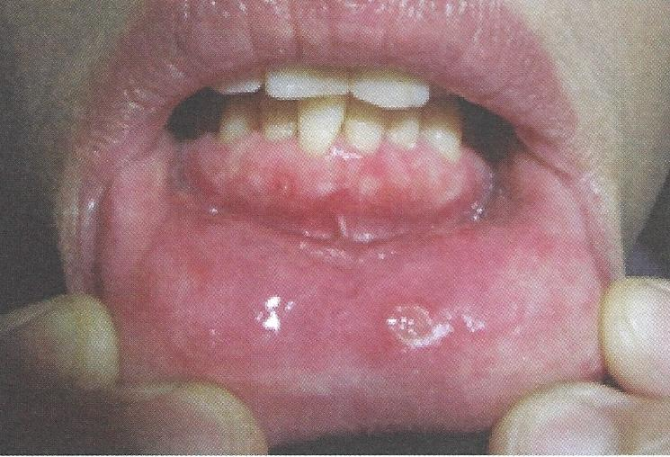

Aphthous ulcers
แผลจากเชื้อ Herpes simplex virus ภายในและนอกช่องปาก
เกิดจากความผิดปกติของภูมิคุ้มกัน
แผลมีรูปร่างกลมหรือรี ขอบเขตชัดเจนสีแดง ฐานหวำปกคลุมด้วยเนื้อตายสีเหลือง
ตำแหน่งแผลพบบริเวณเยื่อเมือกที่มีการเคลื่อนไหว
มีอาการปวด
การรักษาใช้ steroid ทา